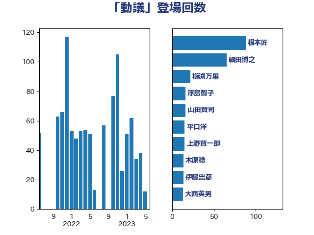

単語「動議」

| 根本匠 | 自由民主党 | 88 回 |
| 細田博之 | 自由民主党 | 65 回 |
| 櫛渕万里 | れいわ新選組 | 22 回 |
| 浮島智子 | 公明党 | 16 回 |
| 山田賢司 | 自由民主党 | 16 回 |
| 平口洋 | 自由民主党 | 15 回 |
| 上野賢一郎 | 自由民主党 | 15 回 |
| 木原稔 | 自由民主党 | 14 回 |
| 伊藤忠彦 | 自由民主党 | 14 回 |
| 大西英男 | 自由民主党 | 13 回 |
| 赤羽一嘉 | 公明党 | 12 回 |
| 源馬謙太郎 | 立憲民主党 | 12 回 |
| 橋本岳 | 自由民主党 | 12 回 |
| 佐々木紀 | 自由民主党 | 12 回 |
| 斎藤アレックス | 国民民主党 | 11 回 |
| 金子恵美 | 立憲民主党 | 10 回 |
| 近藤和也 | 立憲民主党 | 10 回 |
| 吉田統彦 | 立憲民主党 | 10 回 |
| 阿部知子 | 立憲民主党 | 9 回 |
| 鈴木馨祐 | 自由民主党 | 9 回 |
| 足立康史 | 日本維新の会 | 9 回 |
| 森山浩行 | 立憲民主党 | 9 回 |
| 小里泰弘 | 自由民主党 | 9 回 |
| 中根一幸 | 自由民主党 | 9 回 |
| 道下大樹 | 立憲民主党 | 8 回 |
| 義家弘介 | 自由民主党 | 8 回 |
| 笹川博義 | 自由民主党 | 8 回 |
| 笠浩史 | 無所属 | 8 回 |
| 渡辺創 | 立憲民主党 | 8 回 |
| 塚田一郎 | 自由民主党 | 8 回 |
| 谷川弥一 | 自由民主党 | 7 回 |
| 白石洋一 | 立憲民主党 | 7 回 |
| 海江田万里 | 立憲民主党 | 7 回 |
| 奥野信亮 | 自由民主党 | 7 回 |
| 前原誠司 | 国民民主党 | 7 回 |
| 長島昭久 | 自由民主党 | 6 回 |
| 鈴木隼人 | 自由民主党 | 6 回 |
| 鈴木宗男 | 日本維新の会 | 6 回 |
| 野田国義 | 立憲民主党 | 6 回 |
| 赤嶺政賢 | 日本共産党 | 6 回 |
| 羽生田俊 | 自由民主党 | 6 回 |
| 稲田朋美 | 自由民主党 | 6 回 |
| 牧山ひろえ | 立憲民主党 | 6 回 |
| 松島みどり | 自由民主党 | 6 回 |
| 掘井健智 | 日本維新の会 | 6 回 |
| 平沢勝栄 | 自由民主党 | 6 回 |
| 山口俊一 | 自由民主党 | 6 回 |
| 寺田学 | 立憲民主党 | 6 回 |
| 宮内秀樹 | 自由民主党 | 6 回 |
| 和田義明 | 自由民主党 | 6 回 |
| 古川元久 | 国民民主党 | 6 回 |
| 古屋範子 | 公明党 | 6 回 |
| 伴野豊 | 立憲民主党 | 6 回 |
| 三ッ林裕巳 | 自由民主党 | 6 回 |
| 金田勝年 | 自由民主党 | 5 回 |
| 野村哲郎 | 自由民主党 | 5 回 |
| 礒崎哲史 | 国民民主党 | 5 回 |
| 宮本岳志 | 日本共産党 | 5 回 |
| 大河原まさこ | 立憲民主党 | 5 回 |
| 高鳥修一 | 自由民主党 | 4 回 |
| 関芳弘 | 自由民主党 | 4 回 |
| 鈴木貴子 | 自由民主党 | 4 回 |
| 野間健 | 立憲民主党 | 4 回 |
| 赤澤亮正 | 自由民主党 | 4 回 |
| 衛藤晟一 | 自由民主党 | 4 回 |
| 竹内譲 | 公明党 | 4 回 |
| 神津たけし | 立憲民主党 | 4 回 |
| 石田真敏 | 自由民主党 | 4 回 |
| 湯原俊二 | 立憲民主党 | 4 回 |
| 浜田靖一 | 自由民主党 | 4 回 |
| 櫻田義孝 | 自由民主党 | 4 回 |
| 柚木道義 | 立憲民主党 | 4 回 |
| 柘植芳文 | 自由民主党 | 4 回 |
| 打越さく良 | 立憲民主党 | 4 回 |
| 手塚仁雄 | 立憲民主党 | 4 回 |
| 岡本あき子 | 立憲民主党 | 4 回 |
| 小泉龍司 | 自由民主党 | 4 回 |
| 宮本徹 | 日本共産党 | 4 回 |
| あかま二郎 | 自由民主党 | 4 回 |
| 阿達雅志 | 自由民主党 | 3 回 |
| 西岡秀子 | 国民民主党 | 3 回 |
| 菅直人 | 立憲民主党 | 3 回 |
| 盛山正仁 | 自由民主党 | 3 回 |
| 猪瀬直樹 | 日本維新の会 | 3 回 |
| 池畑浩太朗 | 日本維新の会 | 3 回 |
| 武部新 | 自由民主党 | 3 回 |
| 横沢高徳 | 立憲民主党 | 3 回 |
| 梅谷守 | 立憲民主党 | 3 回 |
| 木原誠二 | 自由民主党 | 3 回 |
| 川田龍平 | 立憲民主党 | 3 回 |
| 山田俊男 | 自由民主党 | 3 回 |
| 山本太郎 | れいわ新選組 | 3 回 |
| 小西洋之 | 立憲民主党 | 3 回 |
| 勝部賢志 | 立憲民主党 | 3 回 |
| 鬼木誠 | 立憲民主党 | 2 回 |
| 高橋はるみ | 自由民主党 | 2 回 |
| 鈴木淳司 | 自由民主党 | 2 回 |
| 鈴木俊一 | 自由民主党 | 2 回 |
| 谷田川元 | 立憲民主党 | 2 回 |
| 藤岡隆雄 | 立憲民主党 | 2 回 |
| 竹詰仁 | 国民民主党 | 2 回 |
| 穀田恵二 | 日本共産党 | 2 回 |
| 石橋通宏 | 立憲民主党 | 2 回 |
| 石川昭政 | 自由民主党 | 2 回 |
| 石川大我 | 立憲民主党 | 2 回 |
| 石井正弘 | 自由民主党 | 2 回 |
| 玉木雄一郎 | 国民民主党 | 2 回 |
| 熊谷裕人 | 立憲民主党 | 2 回 |
| 江藤拓 | 自由民主党 | 2 回 |
| 森まさこ | 自由民主党 | 2 回 |
| 松村祥史 | 自由民主党 | 2 回 |
| 松木けんこう | 立憲民主党 | 2 回 |
| 松原仁 | 立憲民主党 | 2 回 |
| 杉尾秀哉 | 立憲民主党 | 2 回 |
| 市村浩一郎 | 日本維新の会 | 2 回 |
| 岸真紀子 | 立憲民主党 | 2 回 |
| 山田宏 | 自由民主党 | 2 回 |
| 小林史明 | 自由民主党 | 2 回 |
| 室井邦彦 | 日本維新の会 | 2 回 |
| 大島敦 | 立憲民主党 | 2 回 |
| 大塚耕平 | 国民民主党 | 2 回 |
| 大塚拓 | 自由民主党 | 2 回 |
| 塩川鉄也 | 日本共産党 | 2 回 |
| 堀井巌 | 自由民主党 | 2 回 |
| 城内実 | 自由民主党 | 2 回 |
| 土屋品子 | 自由民主党 | 2 回 |
| 吉川沙織 | 立憲民主党 | 2 回 |
| 古賀篤 | 自由民主党 | 2 回 |
| 八木哲也 | 自由民主党 | 2 回 |
| 倉林明子 | 日本共産党 | 2 回 |
| 井野俊郎 | 自由民主党 | 2 回 |
| 井上英孝 | 日本維新の会 | 2 回 |
| 中谷真一 | 自由民主党 | 2 回 |
| 中川郁子 | 自由民主党 | 2 回 |
| 下条みつ | 立憲民主党 | 2 回 |
| こやり隆史 | 自由民主党 | 2 回 |
| 鰐淵洋子 | 公明党 | 1 回 |
| 高橋光男 | 公明党 | 1 回 |
| 高木毅 | 自由民主党 | 1 回 |
| 青柳仁士 | 日本維新の会 | 1 回 |
| 長谷川岳 | 自由民主党 | 1 回 |
| 長友慎治 | 国民民主党 | 1 回 |
| 進藤金日子 | 自由民主党 | 1 回 |
| 輿水恵一 | 公明党 | 1 回 |
| 西田昌司 | 自由民主党 | 1 回 |
| 西村智奈美 | 立憲民主党 | 1 回 |
| 菊田真紀子 | 立憲民主党 | 1 回 |
| 荒井優 | 立憲民主党 | 1 回 |
| 紙智子 | 日本共産党 | 1 回 |
| 笠井亮 | 日本共産党 | 1 回 |
| 稲津久 | 公明党 | 1 回 |
| 石井準一 | 自由民主党 | 1 回 |
| 田村貴昭 | 日本共産党 | 1 回 |
| 田村智子 | 日本共産党 | 1 回 |
| 田村まみ | 国民民主党 | 1 回 |
| 田嶋要 | 立憲民主党 | 1 回 |
| 田名部匡代 | 立憲民主党 | 1 回 |
| 田中和徳 | 自由民主党 | 1 回 |
| 猪口邦子 | 自由民主党 | 1 回 |
| 渡辺周 | 立憲民主党 | 1 回 |
| 渡辺博道 | 自由民主党 | 1 回 |
| 浦野靖人 | 日本維新の会 | 1 回 |
| 永岡桂子 | 自由民主党 | 1 回 |
| 森英介 | 自由民主党 | 1 回 |
| 森本真治 | 立憲民主党 | 1 回 |
| 梅村聡 | 日本維新の会 | 1 回 |
| 松沢成文 | 日本維新の会 | 1 回 |
| 東徹 | 日本維新の会 | 1 回 |
| 御法川信英 | 自由民主党 | 1 回 |
| 島尻安伊子 | 自由民主党 | 1 回 |
| 山添拓 | 日本共産党 | 1 回 |
| 山本順三 | 自由民主党 | 1 回 |
| 山井和則 | 立憲民主党 | 1 回 |
| 山下雄平 | 自由民主党 | 1 回 |
| 小林鷹之 | 自由民主党 | 1 回 |
| 小宮山泰子 | 立憲民主党 | 1 回 |
| 宮沢洋一 | 自由民主党 | 1 回 |
| 宮崎勝 | 公明党 | 1 回 |
| 奥野総一郎 | 立憲民主党 | 1 回 |
| 奥下剛光 | 日本維新の会 | 1 回 |
| 大口善徳 | 公明党 | 1 回 |
| 塩村あやか | 立憲民主党 | 1 回 |
| 吉良よし子 | 日本共産党 | 1 回 |
| 古賀千景 | 立憲民主党 | 1 回 |
| 古賀之士 | 立憲民主党 | 1 回 |
| 北神圭朗 | 無所属 | 1 回 |
| 伊波洋一 | 無所属 | 1 回 |
| 伊東良孝 | 自由民主党 | 1 回 |
| 伊佐進一 | 公明党 | 1 回 |
| 仁比聡平 | 日本共産党 | 1 回 |
| 亀岡偉民 | 自由民主党 | 1 回 |
| 串田誠一 | 日本維新の会 | 1 回 |
| 中野洋昌 | 公明党 | 1 回 |
| 中条きよし | 日本維新の会 | 1 回 |
| 中曽根弘文 | 自由民主党 | 1 回 |
| 上月良祐 | 自由民主党 | 1 回 |